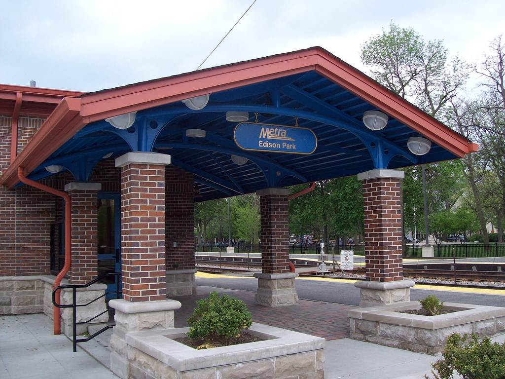

Nearby Destinations
|
Walk under a mile to:
Drive minutes to:
Get around from the many nearby public transportation options:
| Metra Station to Downtown  |
|---|
The home is conveniently located between downtown Park Ridge to the Northwest and downtown Edison Park to the Southeast, which offers a variety of destinations within walking distance.
Points of Interest maps below are centered on the home with varying zoom levels.
|
|
|---|---|
|
|
|
|